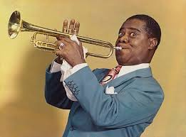
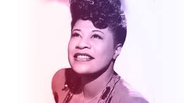

Jazz is a genre of music that originated in the African-American communities of New Orleans in the late 19th and early 20th centuries. It is characterized by swing and blue notes, call and response vocals, polyrhythms, and improvisation. Over the years, jazz has evolved and influenced many other musical styles, becoming a global phenomenon.
Some of the most celebrated jazz musicians have left an indelible mark on the music industry. Their contributions have not only shaped the sound of jazz but also inspired generations of artists across genres. Jazz continues to be a symbol of creativity, freedom, and cultural exchange.
 | Title | Composer |
|---|---|
| What a Wonderful World | Bob Thiele, George David Weiss |
| Summertime | George Gershwin |
| Take Five | Paul Desmond |
Learn more about jazz history at the Smithsonian Jazz website. For upcoming jazz events, check out Jazz at Lincoln Center.